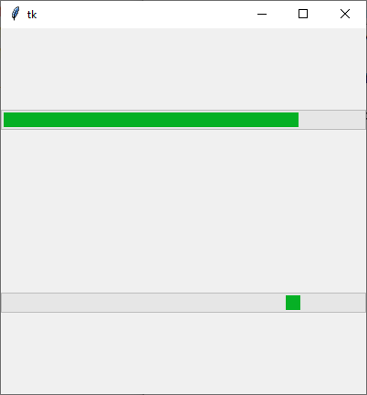

ttk.Progressbar
Ein Fortschrittsbalken, der in zwei Modi arbeiten kann. Im Modus
'determinate' zeigt er den klassischen Fortschritt
von einem Startwert zum Maximum. Im Modus 'indeterminate'
wird lediglich angezeigt, dass etwas passiert: Der Balken wandert
hin und her.
ttk.Progressbar erzeugen
pb = ttk.Progressbar(parent, Optionen)
Progressbar kennt die Optionen:
| Optionsname | Beschreibung |
|---|---|
| length | Länge der langen Achse in Pixeln oder einer anderen Einheit |
| maximum | Maximaler Wert, default 100.0 |
| mode | 'determinate' oder 'indeterminate' |
| orient | tk.HORIZONTAL oder tk.VERTICAL |
| phase | Readonly. Option scheint keinen Effekt zu haben. TODO |
| value | Aktueller Wert der Progressbar. Im Modus 'determinate' ist
dieser Wert der Teil bis zum Maximum, im Modus 'indeterminate'
ist dieser Wert Modulo Maximum zu verstehen und der Wert bis zum Beenden
eines Zyklus |
| variable | Eine Variable, die den value beinhaltet |
ttk.Progressbar kennt die Standardoptionen: anchor, class_, cursor, font, foreground, justify, style, takefocus, text (zur Zeit nicht unterstützt, das kommt mit Tcl/Tk 8.7) und wraplength
Das folgende Programm stellt Progressbars beider Modi vor:
import tkinter as tk
from tkinter import ttk
from tkinter import font
class A(tk.Tk):
def __init__(self):
super().__init__()
self.geometry('400x400')
self._createWidgets()
def _createWidgets(self):
pb1 = ttk.Progressbar(self, mode='determinate')
pb1.pack(expand=tk.YES, fill=tk.X)
pb2 = ttk.Progressbar(self, mode='indeterminate')
pb2.pack(expand=tk.YES, fill=tk.X)
pb1.start()
pb2.start()
if __name__ == '__main__':
window = A()
window.mainloop()Progressbar-Methoden
| Methode | Parameter | Rückgabewert | Beschreibung |
|---|---|---|---|
| pb.start(interval) | interval: (optional) Intervalldauer, default: 50 ms | - | Startet die Fortschrittsanzeige, alle interval Milisekunden wird der Wert erhöht |
| pb.step(delta) | delta: (optional) step-Wert, default:1 | - | Erhöht Wert manuell |
| pb.stop() | - | - | Stoppt automatischen Fortschritt |
Sowie die Widgetmethoden:
- Konfigurationsmethoden:
cget(…)undconfigure(…) - Sonstige Methoden:
identify(…),instate(…)undstate(…)